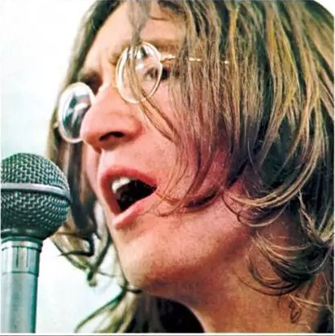

REVOLVER
《Revolver》是英国摇滚乐队The Beatles的第七张录音室专辑，由乔治·马丁担任音乐制作人。 专辑封面由克劳斯·沃曼设计，罗伯特·惠特克拍摄，共收录14首歌曲，于1966年8月5日通过帕洛风唱片公司发行。 这张专辑标志着乐队在音乐风格和录音技术上的重大转变，他们开始更多地在录音室中进行实验，探索新的音乐可能性。
披头士乐队（The Beatles），是一支在1960年成立于英国利物浦的摇滚乐队，被广泛认为是流行音乐史上最伟大和最有影响力的乐队之一。乐队的主要成员包括：
约翰·列侬（John Lennon）：乐队的联合创始人之一，担任节奏吉他手和主要创作人之一，以其独特的创作风格和激进的社会观点而闻名。
 保罗·麦卡特尼（Paul McCartney）：乐队的联合创始人之一，担任贝斯手和主唱，也是乐队的主要创作人之一，以其旋律感和和声技巧著称。
保罗·麦卡特尼（Paul McCartney）：乐队的联合创始人之一，担任贝斯手和主唱，也是乐队的主要创作人之一，以其旋律感和和声技巧著称。
 乔治·哈里森（George Harrison）：乐队的吉他手，后来成为乐队的重要创作人，以其对印度音乐和哲学的兴趣而知名。
乔治·哈里森（George Harrison）：乐队的吉他手，后来成为乐队的重要创作人，以其对印度音乐和哲学的兴趣而知名。
林戈·斯塔尔（Ringo Starr）：乐队的鼓手，以其简单的鼓点和独特的演奏风格而受到喜爱。
披头士乐队的音乐风格多变，从早期的摇滚和流行音乐，到后来的实验性音乐和迷幻摇滚，他们的作品对后世的音乐家和乐队产生了深远的影响。他们的一些最著名的歌曲包括《Let It Be》、《Hey Jude》、《Yesterday》、《A Hard Day's Night》和《Sgt. Pepper's Lonely Hearts Club Band》等。
披头士乐队在1960年代末因为内部矛盾和个人追求而解散，但他们的音乐遗产至今仍然被世界各地的乐迷所热爱和传唱。他们对流行文化、音乐产业以及艺术表达方式的革新，使他们成为了20世纪最具影响力的文化符号之一。
披头士官网

《Revolver》是英国摇滚乐队The Beatles的第七张录音室专辑，由乔治·马丁担任音乐制作人。 专辑封面由克劳斯·沃曼设计，罗伯特·惠特克拍摄，共收录14首歌曲，于1966年8月5日通过帕洛风唱片公司发行。 这张专辑标志着乐队在音乐风格和录音技术上的重大转变，他们开始更多地在录音室中进行实验，探索新的音乐可能性。
《Sgt. Pepper's Lonely Hearts Club Band》是英国摇滚乐队The Beatles的第八张录音室专辑，由乔治·马丁担任制作人，词曲作者包括约翰·列侬、保罗·麦卡特尼和乔治·哈里森。这张专辑于1967年5月26日在英国首发，后于同年6月2日在美国发行。
《Sgt. Pepper's Lonely Hearts Club Band》不仅在音乐上具有革命性，也在艺术和文化上占有重要地位，被滚石杂志评为历史上最伟大的专辑之一。
《Abbey Road》是英国摇滚乐队The Beatles的第十一张录音室专辑，也是他们解散前最后一张集体录制的录音室专辑。这张专辑于1969年9月26日发行。
《Abbey Road》展现了The Beatles的多样性，包括阳光、另类、活泼中带点诡异、极致浪漫和异想天开等不同风格。专辑结尾由8首歌曲结合而成的16分钟串烧，更是玩转了形式的趣味。